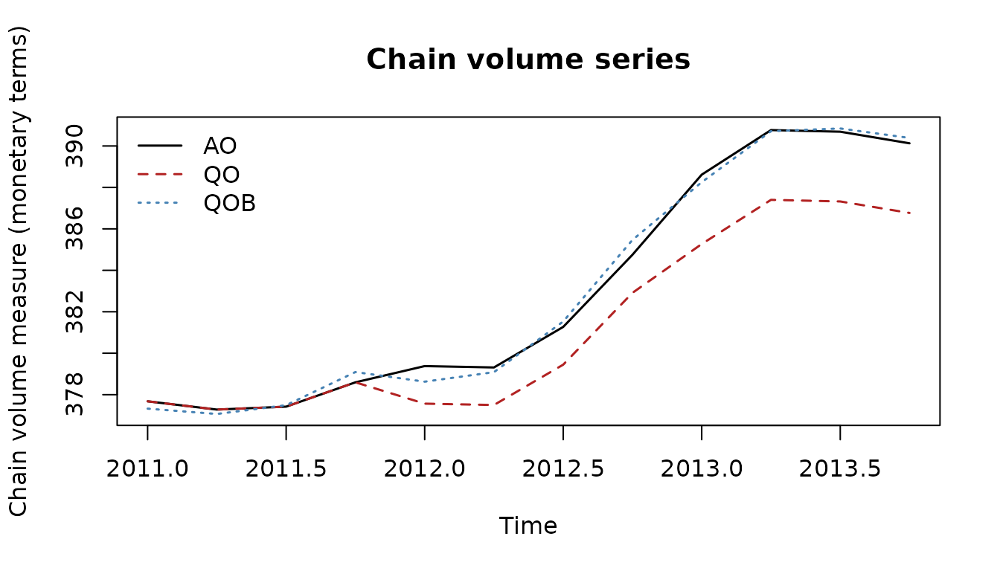
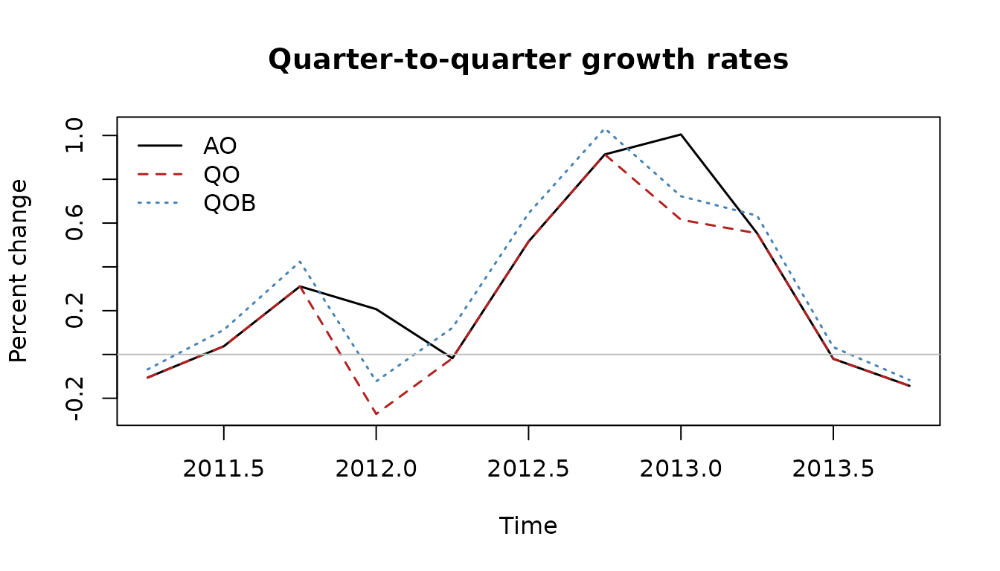
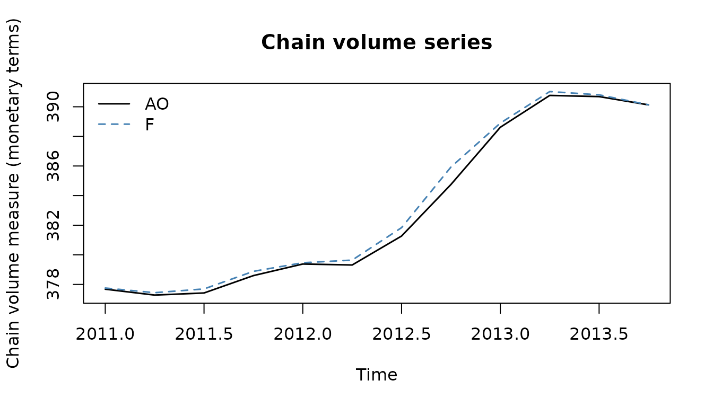
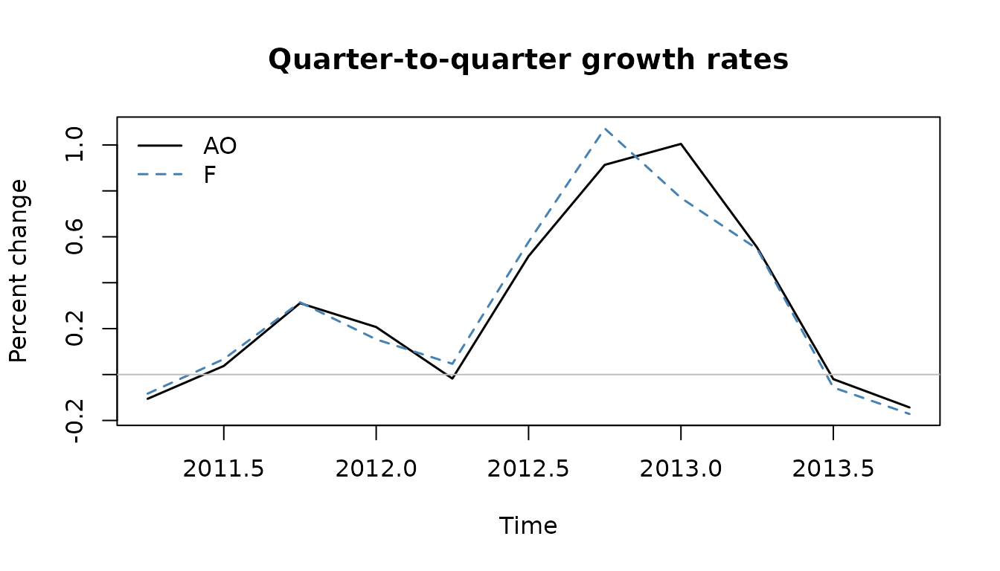

Chapter 8 of the IMF Quarterly National Accounts Manual
Source:vignettes/imf_qna_manual.Rmd
imf_qna_manual.Rmd
library(chainlink)
# The benchmarking examples use the suggested package tempdisagg
has_tempdisagg <- requireNamespace("tempdisagg", quietly = TRUE)
# Percent change over the previous period
growth_rate <- function(x) 100 * (x / stats::lag(x, -1) - 1)Correspondence between the manual and the package
This vignette reproduces the examples of chapter 8 (price and volume measures) of the IMF Quarterly National Accounts Manual with the functions of the package. The table gives the function(s) used for each example. The paragraph numbers are those of the 2017 edition.
| Manual | Paragraphs | Topic | Function(s) |
|---|---|---|---|
| Example 8.1 | 8.24-8.26 | Weighted and unweighted annual averages of prices | base R |
| Example 8.2 | 8.35-8.39 | Annual and quarterly volume measures, Laspeyres-type |
cp_pi2vol(), laspeyres()
|
| Example 8.3 | 8.40-8.46 | Annual volume measures, Fisher |
pi_annual(), laspeyres(),
paasche(), fisher() on annual data |
| Example 8.4 | 8.44-8.46 | Quarterly volume measures, Fisher |
pi_py2pp(),
fisher(reference_freq = 4)
|
| Example 8.5 | 8.59-8.60 | Frequency of chain-linking and drift |
laspeyres(), paasche(),
fisher() with reference_freq = 4
|
| Example 8.6 | 8.71 | Annual overlap |
chain_link(method = "ao"),
annual_chain()
|
| Example 8.7 | 8.72 | One-quarter overlap |
chain_laspeyres(method = "oqo", overlap_prices = "current_prices"),
chain_discrepancy(), cp_pi2cy()
|
| Example 8.8 | 8.46, 8.74-8.76 | Chain-linking and benchmarking of quarterly Fisher indices |
fisher(reference_freq = 4),
annual_chain(), tempdisagg::td()
(suggested) |
| Example 8.9 | 8.85-8.88 | Contributions to percent change, annually chained Laspeyres-type | chain_contrib(method = "ao") |
| 8.89 | Contributions to percent change, quarterly Fisher | fisher_contrib() |
|
| 8.90 | Contributions of variables of any sign (inventories) | residually, see ?chain_contrib
|
|
| 8.56-8.58 | Pseudo chain volume series of variables that change sign | chain_pseudo() |
|
| Figures 8.1, 8.2 | 8.72, 8.74 (examples 8.7, 8.8) | AO vs OQO, Laspeyres vs Fisher |
chain_link(), tempdisagg::td()
(suggested) |
| Example 8.A1, Figure 8.A1 | 8.73, annex 8.1 | AO, OQO and OQO with benchmarking |
chain_link(), tempdisagg::td()
(suggested) |
Additions to the manual:
| Function | Purpose |
|---|---|
pi_py2pp() |
Price indices over the previous year converted to price indices over the previous period (needed for quarterly or monthly Fisher indices) |
pi_annual() |
Annual price indices from quarterly or monthly ones (weighted or simple averages) |
chain_laspeyres() |
Chain-linked volume indices or measures of the components and of the total in one step |
cp_pi2cy() |
Quarterly values at the average prices of the year (overlap quarter of the one-quarter overlap technique) |
chain_discrepancy() |
Non-additivity of the chain volume measures |
chain_rebase() |
Change of the reference year |
chain_pseudo() |
Pseudo chain volume series of a variable that changes sign |
chain_contrib(method = "oqo") |
Exactly additive contributions for the one-quarter overlap technique |
chain_contrib(type = "annual") |
Contributions to the growth of the annual sums |
chain_contrib(extra = ) |
Growth of the total and non-additivity residual |
The contributions are detailed in the vignette
contributions: the formulas for the annual overlap are the
equations (29) to (31) of the manual, those for the one-quarter overlap
are derived from the same decomposition, and all of them are checked on
fully consistent data, for which contributions add up exactly to the
growth of the total.
Weighted and Unweighted Annual Averages of Prices When Sales and Price Patterns Through the Year are Uneven (example 8.1)
A single homogeneous product is sold only in the second and third quarters: the quantities are the same in 1999 and 2000, but the sales shift towards the second quarter. The annual price must be the average of the quarterly prices weighted by the quantities (the unit value), not the simple average.
ex8.1 <- data.frame(
year = rep(c(1999, 2000), each = 4),
quarter = rep(paste0("q", 1:4), 2),
quantity = c(0, 150, 50, 0, 0, 180, 20, 0),
price = c(80, 50, 30, 40, 40, 50, 30, 40)
)
# (3) Current price value
ex8.1$value <- ex8.1$quantity * ex8.1$price
annual8.1 <- data.frame(
year = c(1999, 2000),
quantity = tapply(ex8.1$quantity, ex8.1$year, sum),
value = tapply(ex8.1$value, ex8.1$year, sum),
# (4) Unweighted average price
unweighted_price = tapply(ex8.1$price, ex8.1$year, mean)
)
# (5) Unit value weighted average price
annual8.1$weighted_price <- annual8.1$value / annual8.1$quantity
annual8.1
#> year quantity value unweighted_price weighted_price
#> 1999 1999 200 9000 50 45
#> 2000 2000 200 9600 40 48Quarterly constant price values, with the 1999 average prices:
unweighted_1999 <- annual8.1$unweighted_price[1]
weighted_1999 <- annual8.1$weighted_price[1]
# (6) At unweighted average 1999 prices and (7) at weighted average 1999 prices
ex8.1$constant_unweighted <- ex8.1$quantity * unweighted_1999
ex8.1$constant_weighted <- ex8.1$quantity * weighted_1999
ex8.1
#> year quarter quantity price value constant_unweighted constant_weighted
#> 1 1999 q1 0 80 0 0 0
#> 2 1999 q2 150 50 7500 7500 6750
#> 3 1999 q3 50 30 1500 2500 2250
#> 4 1999 q4 0 40 0 0 0
#> 5 2000 q1 0 40 0 0 0
#> 6 2000 q2 180 50 9000 9000 8100
#> 7 2000 q3 20 30 600 1000 900
#> 8 2000 q4 0 40 0 0 0
annual8.1$constant_unweighted <- tapply(ex8.1$constant_unweighted, ex8.1$year, sum)
annual8.1$constant_weighted <- tapply(ex8.1$constant_weighted, ex8.1$year, sum)
annual8.1[, c("year", "value", "constant_unweighted", "constant_weighted")]
#> year value constant_unweighted constant_weighted
#> 1999 1999 9000 10000 9000
#> 2000 2000 9600 10000 9000Percent changes from 1999 to 2000:
pct <- function(x) round(100 * (x[2] / x[1] - 1), 1)
c(`current price value` = pct(annual8.1$value),
`unweighted average price` = pct(annual8.1$unweighted_price),
`weighted average price` = pct(annual8.1$weighted_price),
`volume (weighted average prices)` = pct(annual8.1$constant_weighted),
# direct deflation with the unweighted price: misleading
`volume (direct deflation, unweighted prices)` =
pct(annual8.1$value / annual8.1$unweighted_price))
#> current price value
#> 6.7
#> unweighted average price
#> -20.0
#> weighted average price
#> 6.7
#> volume (weighted average prices)
#> 0.0
#> volume (direct deflation, unweighted prices)
#> 33.3The unweighted average price falls by 20%, so deflating the annual current price data with it wrongly gives a volume increase of 33.3%. With the weighted average price, the volume is stable, as the quantities. The annual sum of the quarterly constant price values at the unweighted average price of the base year (column 6) differs from the current price value (10000 instead of 9000): it can be corrected by a multiplicative adjustment (9000/10000) of the whole series, which does not change the rates of change.
Deriving Annual and Quarterly Volume Measures using Laspeyres-type Formula (example 8.2)
Elementary Volume Measures (in monetary terms)
evm <- imf_cp / imf_pi * 100
evm |> round(1)
#> imf_cp.A imf_cp.B
#> 2010 Q1 NA NA
#> 2010 Q2 NA NA
#> 2010 Q3 NA NA
#> 2010 Q4 NA NA
#> 2011 Q1 156.6 221.1
#> 2011 Q2 159.2 218.1
#> 2011 Q3 162.5 214.9
#> 2011 Q4 164.8 213.8
#> 2012 Q1 170.0 210.4
#> 2012 Q2 176.9 203.4
#> 2012 Q3 187.0 195.2
#> 2012 Q4 212.3 173.4
#> 2013 Q1 223.6 166.0
#> 2013 Q2 237.0 154.8
#> 2013 Q3 245.4 146.3
#> 2013 Q4 249.1 142.0Elementary Volume Indices (previous year = 100)
cp_pi2vol(imf_cp, imf_pi) |> round(1)
#> A B
#> 2011 Q1 104.4 98.3
#> 2011 Q2 106.1 96.9
#> 2011 Q3 108.3 95.5
#> 2011 Q4 109.8 95.0
#> 2012 Q1 103.0 98.5
#> 2012 Q2 107.2 95.2
#> 2012 Q3 113.4 91.3
#> 2012 Q4 128.7 81.1
#> 2013 Q1 117.8 86.3
#> 2013 Q2 124.9 80.4
#> 2013 Q3 129.3 76.1
#> 2013 Q4 131.3 73.8Laspeyres Volume Index (previous year = 100)
laspeyres(imf_cp, imf_pi, output = "index") |> round(1)
#> Qtr1 Qtr2 Qtr3 Qtr4
#> 2011 100.7 100.6 100.6 101.0
#> 2012 100.4 100.4 100.9 101.9
#> 2013 102.0 102.5 102.5 102.3Laspeyres Volume Measure (in monetary terms)
laspeyres(imf_cp, imf_pi, output = "measure") |> round(1)
#> Qtr1 Qtr2 Qtr3 Qtr4
#> 2011 377.7 377.3 377.4 378.6
#> 2012 380.4 380.3 382.3 385.7
#> 2013 389.6 391.7 391.7 391.1Laspeyres Volume Index (previous year = 100) and Measure (in monetary terms)
laspeyres(imf_cp, imf_pi, output = "both") |> round(1)
#> Index Measure
#> 2011 Q1 100.7 377.7
#> 2011 Q2 100.6 377.3
#> 2011 Q3 100.6 377.4
#> 2011 Q4 101.0 378.6
#> 2012 Q1 100.4 380.4
#> 2012 Q2 100.4 380.3
#> 2012 Q3 100.9 382.3
#> 2012 Q4 101.9 385.7
#> 2013 Q1 102.0 389.6
#> 2013 Q2 102.5 391.7
#> 2013 Q3 102.5 391.7
#> 2013 Q4 102.3 391.1Summary table :
table_8.2 <-
ts.union(
imf_cp,
imf_cp[,"A"] + imf_cp[,"B"],
imf_pi,
evm,
evm[,1] + evm[,2],
cp_pi2vol(imf_cp, imf_pi),
laspeyres(imf_cp, imf_pi, output = "index"),
laspeyres(imf_cp, imf_pi, output = "measure")
)
colnames(table_8.2) <- c(
paste("Current Prices", c("A", "B", "Total")),
paste("Elementary Price Indices", c("A", "B")),
paste("Elementary Volume Measures", c("A", "B", "Sum")),
paste("Elementary Volume Indices", c("A", "B")),
"Laspeyres Volume Index",
"Laspeyres Volume Measures"
)
round(table_8.2, 2)
#> Current Prices A Current Prices B Current Prices Total
#> 2010 Q1 150.0 225.0 375.0
#> 2010 Q2 150.0 225.0 375.0
#> 2010 Q3 150.0 225.0 375.0
#> 2010 Q4 150.0 225.0 375.0
#> 2011 Q1 159.7 218.9 378.6
#> 2011 Q2 163.2 213.7 376.9
#> 2011 Q3 167.4 210.6 378.0
#> 2011 Q4 169.7 211.7 381.4
#> 2012 Q1 174.2 204.1 378.3
#> 2012 Q2 180.4 201.4 381.8
#> 2012 Q3 188.9 192.3 381.2
#> 2012 Q4 215.5 171.7 387.2
#> 2013 Q1 224.7 166.0 390.7
#> 2013 Q2 235.8 156.3 392.1
#> 2013 Q3 242.9 148.5 391.4
#> 2013 Q4 245.4 144.8 390.2
#> Elementary Price Indices A Elementary Price Indices B
#> 2010 Q1 NA NA
#> 2010 Q2 NA NA
#> 2010 Q3 NA NA
#> 2010 Q4 NA NA
#> 2011 Q1 102.0 99.0
#> 2011 Q2 102.5 98.0
#> 2011 Q3 103.0 98.0
#> 2011 Q4 103.0 99.0
#> 2012 Q1 102.5 97.0
#> 2012 Q2 102.0 99.0
#> 2012 Q3 101.0 98.5
#> 2012 Q4 101.5 99.0
#> 2013 Q1 100.5 100.0
#> 2013 Q2 99.5 101.0
#> 2013 Q3 99.0 101.5
#> 2013 Q4 98.5 102.0
#> Elementary Volume Measures A Elementary Volume Measures B
#> 2010 Q1 NA NA
#> 2010 Q2 NA NA
#> 2010 Q3 NA NA
#> 2010 Q4 NA NA
#> 2011 Q1 156.57 221.11
#> 2011 Q2 159.22 218.06
#> 2011 Q3 162.52 214.90
#> 2011 Q4 164.76 213.84
#> 2012 Q1 169.95 210.41
#> 2012 Q2 176.86 203.43
#> 2012 Q3 187.03 195.23
#> 2012 Q4 212.32 173.43
#> 2013 Q1 223.58 166.00
#> 2013 Q2 236.98 154.75
#> 2013 Q3 245.35 146.31
#> 2013 Q4 249.14 141.96
#> Elementary Volume Measures Sum Elementary Volume Indices A
#> 2010 Q1 NA NA
#> 2010 Q2 NA NA
#> 2010 Q3 NA NA
#> 2010 Q4 NA NA
#> 2011 Q1 377.68 104.38
#> 2011 Q2 377.28 106.15
#> 2011 Q3 377.42 108.35
#> 2011 Q4 378.60 109.84
#> 2012 Q1 380.36 103.00
#> 2012 Q2 380.30 107.19
#> 2012 Q3 382.26 113.35
#> 2012 Q4 385.75 128.68
#> 2013 Q1 389.58 117.83
#> 2013 Q2 391.74 124.89
#> 2013 Q3 391.66 129.30
#> 2013 Q4 391.10 131.30
#> Elementary Volume Indices B Laspeyres Volume Index
#> 2010 Q1 NA NA
#> 2010 Q2 NA NA
#> 2010 Q3 NA NA
#> 2010 Q4 NA NA
#> 2011 Q1 98.27 100.71
#> 2011 Q2 96.92 100.61
#> 2011 Q3 95.51 100.65
#> 2011 Q4 95.04 100.96
#> 2012 Q1 98.45 100.43
#> 2012 Q2 95.19 100.42
#> 2012 Q3 91.35 100.93
#> 2012 Q4 81.15 101.85
#> 2013 Q1 86.29 101.95
#> 2013 Q2 80.44 102.52
#> 2013 Q3 76.05 102.49
#> 2013 Q4 73.79 102.35
#> Laspeyres Volume Measures
#> 2010 Q1 NA
#> 2010 Q2 NA
#> 2010 Q3 NA
#> 2010 Q4 NA
#> 2011 Q1 377.68
#> 2011 Q2 377.28
#> 2011 Q3 377.42
#> 2011 Q4 378.60
#> 2012 Q1 380.36
#> 2012 Q2 380.30
#> 2012 Q3 382.26
#> 2012 Q4 385.75
#> 2013 Q1 389.58
#> 2013 Q2 391.74
#> 2013 Q3 391.66
#> 2013 Q4 391.10Deriving Annual Volume Measures using Fisher Formula (example 8.3)
The annual data are derived from the quarterly data of example 8.2.
As in the manual, the annual price indices are the weighted averages of
the quarterly ones (pi_annual(), as the unit value of
example 8.1): the annual volumes at the prices of the previous year are
then the annual sums of the quarterly ones, which is not the case with
the simple averages (method = "mean").
Annual Elementary Price Indices (weighted and simple averages)
imf_cp_an <- stats::aggregate.ts(imf_cp)
imf_pi_an <- pi_annual(imf_pi, imf_cp)
ts.union(Weighted = imf_pi_an,
Simple = pi_annual(imf_pi, method = "mean")) |> round(2)
#> Time Series:
#> Start = 2010
#> End = 2013
#> Frequency = 1
#> Weighted.A Weighted.B Simple.A Simple.B
#> 2010 NA NA NA NA
#> 2011 102.63 98.50 102.62 98.50
#> 2012 101.72 98.34 101.75 98.38
#> 2013 99.34 101.08 99.38 101.12Elementary Level Deflation
eld <- imf_cp_an / imf_pi_an * 100
eld |> round(1)
#> Time Series:
#> Start = 2010
#> End = 2013
#> Frequency = 1
#> imf_cp_an.A imf_cp_an.B
#> 2010 NA NA
#> 2011 643.1 867.9
#> 2012 746.2 782.5
#> 2013 955.1 609.0Elementary Volume Indices (year-on-year)
cp_pi2vol(imf_cp_an, imf_pi_an) |> round(2)
#> Time Series:
#> Start = 2011
#> End = 2013
#> Frequency = 1
#> A B
#> 2011 107.18 96.43
#> 2012 113.05 91.53
#> 2013 125.83 79.14Laspeyres Volume Index (previous year = 100)
laspeyres(imf_cp_an, imf_pi_an, output = "index") |> round(2)
#> Time Series:
#> Start = 2011
#> End = 2013
#> Frequency = 1
#> [1] 100.73 100.91 102.33Paasche Volume Measure (previous year = 100)
paasche(imf_cp_an, imf_pi_an, output = "index") |> round(2)
#> Time Series:
#> Start = 2011
#> End = 2013
#> Frequency = 1
#> [1] 100.84 101.09 102.13Fisher Volume Measure (previous year = 100)
fisher(imf_cp_an, imf_pi_an, output = "index") |> round(2)
#> Time Series:
#> Start = 2011
#> End = 2013
#> Frequency = 1
#> [1] 100.79 101.00 102.23Summary Table
table_8.3 <-
ts.union(
imf_cp_an,
imf_cp_an[,"A"] + imf_cp_an[,"B"],
imf_pi_an,
imf_cp_an / imf_pi_an * 100,
cp_pi2vol(imf_cp_an, imf_pi_an),
laspeyres(imf_cp_an, imf_pi_an, output = "index"),
paasche(imf_cp_an, imf_pi_an, output = "index"),
fisher(imf_cp_an, imf_pi_an, output = "index")
)
colnames(table_8.3) <- c(
paste("Current Prices", c("A", "B", "Total")),
paste("Elementary Price Indices", c("A", "B")),
paste("Elementary Level Deflation", c("A", "B")),
paste("Elementary Volume Indices", c("A", "B")),
"Laspeyres Volume Index",
"Paasche Volume Index",
"Fisher Volume Index"
)
round(table_8.3, 2)
#> Time Series:
#> Start = 2010
#> End = 2013
#> Frequency = 1
#> Current Prices A Current Prices B Current Prices Total
#> 2010 600.0 900.0 1500.0
#> 2011 660.0 854.9 1514.9
#> 2012 759.0 769.5 1528.5
#> 2013 948.8 615.6 1564.4
#> Elementary Price Indices A Elementary Price Indices B
#> 2010 NA NA
#> 2011 102.63 98.50
#> 2012 101.72 98.34
#> 2013 99.34 101.08
#> Elementary Level Deflation A Elementary Level Deflation B
#> 2010 NA NA
#> 2011 643.07 867.91
#> 2012 746.16 782.51
#> 2013 955.06 609.02
#> Elementary Volume Indices A Elementary Volume Indices B
#> 2010 NA NA
#> 2011 107.18 96.43
#> 2012 113.05 91.53
#> 2013 125.83 79.14
#> Laspeyres Volume Index Paasche Volume Index Fisher Volume Index
#> 2010 NA NA NA
#> 2011 100.73 100.84 100.79
#> 2012 100.91 101.09 101.00
#> 2013 102.33 102.13 102.23Deriving Quarterly Volume Measures using Fisher Formula (example 8.4)
With reference_freq = 4, the volume indices are computed
over the previous quarter: they need price indices over the previous
quarter, whereas those of example 8.2 are over the previous year.
pi_py2pp() converts them (these are the price indices of
example 8.4).
ep8.4 <- pi_py2pp(imf_pi)
ep8.4 |> round(2)
#> A B
#> 2011 Q1 102.00 99.00
#> 2011 Q2 100.49 98.99
#> 2011 Q3 100.49 100.00
#> 2011 Q4 100.00 101.02
#> 2012 Q1 102.13 96.51
#> 2012 Q2 99.51 102.06
#> 2012 Q3 99.02 99.49
#> 2012 Q4 100.50 100.51
#> 2013 Q1 100.75 99.37
#> 2013 Q2 99.00 101.00
#> 2013 Q3 99.50 100.50
#> 2013 Q4 99.49 100.49Elementary Level Deflation
eld <- imf_cp / ep8.4 * 100
eld |> round(1)
#> imf_cp.A imf_cp.B
#> 2011 Q1 156.6 221.1
#> 2011 Q2 162.4 215.9
#> 2011 Q3 166.6 210.6
#> 2011 Q4 169.7 209.6
#> 2012 Q1 170.6 211.5
#> 2012 Q2 181.3 197.3
#> 2012 Q3 190.8 193.3
#> 2012 Q4 214.4 170.8
#> 2013 Q1 223.0 167.1
#> 2013 Q2 238.2 154.8
#> 2013 Q3 244.1 147.8
#> 2013 Q4 246.6 144.1Elementary Volume Indices (quarter-to-quarter)
cp_pi2vol(imf_cp, ep8.4, reference_freq = 4) |> round(2)
#> A B
#> 2011 Q1 104.38 98.27
#> 2011 Q2 101.69 98.62
#> 2011 Q3 102.08 98.55
#> 2011 Q4 101.37 99.51
#> 2012 Q1 100.51 99.90
#> 2012 Q2 104.07 96.68
#> 2012 Q3 105.75 95.97
#> 2012 Q4 113.52 88.84
#> 2013 Q1 103.50 97.29
#> 2013 Q2 105.99 93.22
#> 2013 Q3 103.53 94.54
#> 2013 Q4 101.54 97.03Laspeyres Volume Index (previous quarter = 100)
laspeyres(imf_cp, ep8.4, output = "index", reference_freq = 4) |> round(2)
#> Qtr1 Qtr2 Qtr3 Qtr4
#> 2011 100.71 99.92 100.08 100.33
#> 2012 100.17 100.08 100.59 101.07
#> 2013 100.75 100.57 99.95 99.83Paasche Volume Measure (previous quarter = 100)
paasche(imf_cp, ep8.4, output = "index", reference_freq = 4) |> round(2)
#> Qtr1 Qtr2 Qtr3 Qtr4
#> 2011 100.76 99.93 100.08 100.33
#> 2012 100.18 100.04 100.58 101.07
#> 2013 100.77 100.51 99.93 99.82Fisher Volume Index (previous quarter = 100)
fisher(imf_cp, ep8.4, output = "index", reference_freq = 4) |> round(2)
#> Qtr1 Qtr2 Qtr3 Qtr4
#> 2011 100.74 99.92 100.08 100.33
#> 2012 100.18 100.06 100.58 101.07
#> 2013 100.76 100.54 99.94 99.83Summary Table
table_8.4 <-
ts.union(
imf_cp,
imf_cp[,"A"] + imf_cp[,"B"],
ep8.4,
eld,
cp_pi2vol(imf_cp, ep8.4, reference_freq = 4),
laspeyres(imf_cp, ep8.4, output = "index", reference_freq = 4),
paasche(imf_cp, ep8.4, output = "index", reference_freq = 4),
fisher(imf_cp, ep8.4, output = "index", reference_freq = 4)
)
colnames(table_8.4) <- c(
paste("Current Prices", c("A", "B", "Total")),
paste("Elementary Price Indices", c("A", "B")),
paste("Elementary Level Deflation", c("A", "B")),
paste("Elementary Volume Indices", c("A", "B")),
"Laspeyres Volume Index",
"Paasche Volume Index",
"Fisher Volume Index"
)
round(table_8.4, 2)
#> Current Prices A Current Prices B Current Prices Total
#> 2010 Q1 150.0 225.0 375.0
#> 2010 Q2 150.0 225.0 375.0
#> 2010 Q3 150.0 225.0 375.0
#> 2010 Q4 150.0 225.0 375.0
#> 2011 Q1 159.7 218.9 378.6
#> 2011 Q2 163.2 213.7 376.9
#> 2011 Q3 167.4 210.6 378.0
#> 2011 Q4 169.7 211.7 381.4
#> 2012 Q1 174.2 204.1 378.3
#> 2012 Q2 180.4 201.4 381.8
#> 2012 Q3 188.9 192.3 381.2
#> 2012 Q4 215.5 171.7 387.2
#> 2013 Q1 224.7 166.0 390.7
#> 2013 Q2 235.8 156.3 392.1
#> 2013 Q3 242.9 148.5 391.4
#> 2013 Q4 245.4 144.8 390.2
#> Elementary Price Indices A Elementary Price Indices B
#> 2010 Q1 NA NA
#> 2010 Q2 NA NA
#> 2010 Q3 NA NA
#> 2010 Q4 NA NA
#> 2011 Q1 102.00 99.00
#> 2011 Q2 100.49 98.99
#> 2011 Q3 100.49 100.00
#> 2011 Q4 100.00 101.02
#> 2012 Q1 102.13 96.51
#> 2012 Q2 99.51 102.06
#> 2012 Q3 99.02 99.49
#> 2012 Q4 100.50 100.51
#> 2013 Q1 100.75 99.37
#> 2013 Q2 99.00 101.00
#> 2013 Q3 99.50 100.50
#> 2013 Q4 99.49 100.49
#> Elementary Level Deflation A Elementary Level Deflation B
#> 2010 Q1 NA NA
#> 2010 Q2 NA NA
#> 2010 Q3 NA NA
#> 2010 Q4 NA NA
#> 2011 Q1 156.57 221.11
#> 2011 Q2 162.40 215.88
#> 2011 Q3 166.59 210.60
#> 2011 Q4 169.70 209.56
#> 2012 Q1 170.57 211.48
#> 2012 Q2 181.28 197.33
#> 2012 Q3 190.77 193.28
#> 2012 Q4 214.44 170.83
#> 2013 Q1 223.03 167.05
#> 2013 Q2 238.17 154.75
#> 2013 Q3 244.13 147.77
#> 2013 Q4 246.65 144.09
#> Elementary Volume Indices A Elementary Volume Indices B
#> 2010 Q1 NA NA
#> 2010 Q2 NA NA
#> 2010 Q3 NA NA
#> 2010 Q4 NA NA
#> 2011 Q1 104.38 98.27
#> 2011 Q2 101.69 98.62
#> 2011 Q3 102.08 98.55
#> 2011 Q4 101.37 99.51
#> 2012 Q1 100.51 99.90
#> 2012 Q2 104.07 96.68
#> 2012 Q3 105.75 95.97
#> 2012 Q4 113.52 88.84
#> 2013 Q1 103.50 97.29
#> 2013 Q2 105.99 93.22
#> 2013 Q3 103.53 94.54
#> 2013 Q4 101.54 97.03
#> Laspeyres Volume Index Paasche Volume Index Fisher Volume Index
#> 2010 Q1 NA NA NA
#> 2010 Q2 NA NA NA
#> 2010 Q3 NA NA NA
#> 2010 Q4 NA NA NA
#> 2011 Q1 100.71 100.76 100.74
#> 2011 Q2 99.92 99.93 99.92
#> 2011 Q3 100.08 100.08 100.08
#> 2011 Q4 100.33 100.33 100.33
#> 2012 Q1 100.17 100.18 100.18
#> 2012 Q2 100.08 100.04 100.06
#> 2012 Q3 100.59 100.58 100.58
#> 2012 Q4 101.07 101.07 101.07
#> 2013 Q1 100.75 100.77 100.76
#> 2013 Q2 100.57 100.51 100.54
#> 2013 Q3 99.95 99.93 99.94
#> 2013 Q4 99.83 99.82 99.83Frequency of Chain-Linking and the Problem of “Drift” (example 8.5)
Two products have oscillating prices and quantities, and the prices and the quantities of the fourth quarter are those of the first one.
PA <- c(2, 3, 4, 2) # price of A
PB <- c(5, 4, 2, 5) # price of B
QA <- c(50, 40, 60, 50) # quantities of A
QB <- c(60, 70, 30, 60) # quantities of B
cp_8.5 <- ts(cbind(A = PA * QA, B = PB * QB), start = c(2011, 1), frequency = 4)
# price indices over the previous quarter
pi_8.5 <- ts(cbind(A = c(NA, PA[-1] / PA[-4] * 100),
B = c(NA, PB[-1] / PB[-4] * 100)),
start = c(2011, 1), frequency = 4)
# Current prices and total value
ts(cbind(as.matrix(cp_8.5), Total = rowSums(cp_8.5)),
start = c(2011, 1), frequency = 4)
#> as.matrix(cp_8.5).A as.matrix(cp_8.5).B Total
#> 2011 Q1 100 300 400
#> 2011 Q2 120 280 400
#> 2011 Q3 240 60 300
#> 2011 Q4 100 300 400Fixed-base indices (first quarter = 100), that come back to 100 in the fourth quarter:
p <- cbind(PA, PB)
q <- cbind(QA, QB)
fixed_l <- 100 * as.numeric(q %*% p[1, ]) / sum(p[1, ] * q[1, ])
fixed_p <- 100 * rowSums(p * q) / as.numeric(p %*% q[1, ])
fixed_8.5 <- ts(cbind(Laspeyres = fixed_l,
Paasche = fixed_p,
Fisher = sqrt(fixed_l * fixed_p)),
start = c(2011, 1), frequency = 4)
round(fixed_8.5, 2)
#> Laspeyres Paasche Fisher
#> 2011 Q1 100.0 100.00 100.00
#> 2011 Q2 107.5 102.56 105.00
#> 2011 Q3 67.5 93.75 79.55
#> 2011 Q4 100.0 100.00 100.00Quarterly chain-linked indices: the quarter-to-quarter indices (computed with the previous quarter weights) are chained.
chain_8.5 <- function(x) {
ts(c(100, 100 * cumprod(as.numeric(x) / 100)), start = c(2011, 1), frequency = 4)
}
chained_8.5 <- ts.union(
Laspeyres = chain_8.5(laspeyres(cp_8.5, pi_8.5, reference_freq = 4)),
Paasche = chain_8.5(paasche(cp_8.5, pi_8.5, reference_freq = 4)),
Fisher = chain_8.5(fisher(cp_8.5, pi_8.5, reference_freq = 4))
)
round(chained_8.5, 2)
#> Laspeyres Paasche Fisher
#> 2011 Q1 100.00 100.00 100.00
#> 2011 Q2 107.50 102.56 105.00
#> 2011 Q3 80.62 102.56 90.94
#> 2011 Q4 86.00 151.95 114.31Although the prices and the quantities of the fourth quarter are those of the first one, the chained indices do not come back to 100: this is the drift (−14% for the Laspeyres index, +52% for the Paasche index and +14% for the Fisher index). Chain-linking with a high frequency (quarterly) is not recommended when prices and quantities oscillate: this is why the annual overlap and the one-quarter overlap techniques link once a year.
Summary table :
table_8.5 <-
rbind(
t(fixed_8.5),
t(chained_8.5)
)
rownames(table_8.5) <- c(
"Fixed-based Laspeyres (q1-based)",
"Fixed-based Paasche (q1-based)",
"Fixed-based Fisher (q1-based)",
"Quarterly chain-linked Laspeyres",
"Quarterly chain-linked Paasche",
"Quarterly chain-linked Fisher"
)
colnames(table_8.5) <- sprintf("Quarter %s", 1:4)
round(table_8.5, 2)
#> Quarter 1 Quarter 2 Quarter 3 Quarter 4
#> Fixed-based Laspeyres (q1-based) 100 107.50 67.50 100.00
#> Fixed-based Paasche (q1-based) 100 102.56 93.75 100.00
#> Fixed-based Fisher (q1-based) 100 105.00 79.55 100.00
#> Quarterly chain-linked Laspeyres 100 107.50 80.62 86.00
#> Quarterly chain-linked Paasche 100 102.56 102.56 151.95
#> Quarterly chain-linked Fisher 100 105.00 90.94 114.31Chain-Linking Annually-weighted Laspeyres-type Indices: Annual Overlap Technique (example 8.6)
Volume Measures (previous year = 100)
# Current prices and volume indices of the components and of their sum
imf_cp_sum <- ts.union(imf_cp, imf_cp[, "A"] + imf_cp[, "B"])
vol8.6 <- ts.union(cp_pi2vol(imf_cp, imf_pi), laspeyres(imf_cp, imf_pi))
colnames(imf_cp_sum) <- colnames(vol8.6) <- c("A", "B", "Sum")
vol8.6 |> round(2)
#> A B Sum
#> 2011 Q1 104.38 98.27 100.71
#> 2011 Q2 106.15 96.92 100.61
#> 2011 Q3 108.35 95.51 100.65
#> 2011 Q4 109.84 95.04 100.96
#> 2012 Q1 103.00 98.45 100.43
#> 2012 Q2 107.19 95.19 100.42
#> 2012 Q3 113.35 91.35 100.93
#> 2012 Q4 128.68 81.15 101.85
#> 2013 Q1 117.83 86.29 101.95
#> 2013 Q2 124.89 80.44 102.52
#> 2013 Q3 129.30 76.05 102.49
#> 2013 Q4 131.30 73.79 102.35Chain-Indices with Annual Overlap (2010 =100)
chain_link(method = "ao", vo = vol8.6, imf_cp_sum,
base_year = 2010, output = "index") |> round(2)
#> A B Sum
#> 2011 Q1 104.38 98.27 100.71
#> 2011 Q2 106.15 96.92 100.61
#> 2011 Q3 108.35 95.51 100.65
#> 2011 Q4 109.84 95.04 100.96
#> 2012 Q1 110.39 94.94 101.17
#> 2012 Q2 114.88 91.79 101.15
#> 2012 Q3 121.49 88.09 101.67
#> 2012 Q4 137.91 78.25 102.60
#> 2013 Q1 142.77 76.17 103.63
#> 2013 Q2 151.33 71.01 104.20
#> 2013 Q3 156.68 67.13 104.18
#> 2013 Q4 159.09 65.14 104.03Chain Volume Measures with Annual Overlap in Monetary Terms
chain_link(method = "ao", vol8.6, imf_cp_sum,
base_year = 2010, output = "measure") |> round(1)
#> A B Sum
#> 2011 Q1 156.6 221.1 377.7
#> 2011 Q2 159.2 218.1 377.3
#> 2011 Q3 162.5 214.9 377.4
#> 2011 Q4 164.8 213.8 378.6
#> 2012 Q1 165.6 213.6 379.4
#> 2012 Q2 172.3 206.5 379.3
#> 2012 Q3 182.2 198.2 381.3
#> 2012 Q4 206.9 176.1 384.8
#> 2013 Q1 214.2 171.4 388.6
#> 2013 Q2 227.0 159.8 390.8
#> 2013 Q3 235.0 151.0 390.7
#> 2013 Q4 238.6 146.6 390.1Summary table
table_8.6 <-
ts.union(
imf_cp_sum,
imf_cp/imf_pi*100,
(imf_cp_sum[, "A"]/imf_pi[, "A"] +
imf_cp_sum[, "B"]/imf_pi[, "B"])*100,
vol8.6,
chain_link(method = "ao", vol8.6, imf_cp_sum,
base_year = 2010, output = "index"),
chain_link(method = "ao", vol8.6, imf_cp_sum,
base_year = 2010, output = "measure"),
chain_discrepancy(
chain_link(method = "ao", vol8.6, imf_cp_sum,
base_year = 2010, output = "measure")
)
)
colnames(table_8.6) <- c(
paste("Current Prices", c("A", "B", "Sum")),
paste("Previous Year's Prices", c("A", "B", "Sum")),
paste("Volume Measures", c("A", "B", "Sum")),
paste("Chain-Indices with Annual Overlap", c("A", "B", "Sum")),
paste("Chain Volume Measures with Annual Overlap", c("A", "B", "Sum")),
"Discrepancies"
)
round(table_8.6, 2)
#> Current Prices A Current Prices B Current Prices Sum
#> 2010 Q1 150.0 225.0 375.0
#> 2010 Q2 150.0 225.0 375.0
#> 2010 Q3 150.0 225.0 375.0
#> 2010 Q4 150.0 225.0 375.0
#> 2011 Q1 159.7 218.9 378.6
#> 2011 Q2 163.2 213.7 376.9
#> 2011 Q3 167.4 210.6 378.0
#> 2011 Q4 169.7 211.7 381.4
#> 2012 Q1 174.2 204.1 378.3
#> 2012 Q2 180.4 201.4 381.8
#> 2012 Q3 188.9 192.3 381.2
#> 2012 Q4 215.5 171.7 387.2
#> 2013 Q1 224.7 166.0 390.7
#> 2013 Q2 235.8 156.3 392.1
#> 2013 Q3 242.9 148.5 391.4
#> 2013 Q4 245.4 144.8 390.2
#> Previous Year's Prices A Previous Year's Prices B
#> 2010 Q1 NA NA
#> 2010 Q2 NA NA
#> 2010 Q3 NA NA
#> 2010 Q4 NA NA
#> 2011 Q1 156.57 221.11
#> 2011 Q2 159.22 218.06
#> 2011 Q3 162.52 214.90
#> 2011 Q4 164.76 213.84
#> 2012 Q1 169.95 210.41
#> 2012 Q2 176.86 203.43
#> 2012 Q3 187.03 195.23
#> 2012 Q4 212.32 173.43
#> 2013 Q1 223.58 166.00
#> 2013 Q2 236.98 154.75
#> 2013 Q3 245.35 146.31
#> 2013 Q4 249.14 141.96
#> Previous Year's Prices Sum Volume Measures A Volume Measures B
#> 2010 Q1 NA NA NA
#> 2010 Q2 NA NA NA
#> 2010 Q3 NA NA NA
#> 2010 Q4 NA NA NA
#> 2011 Q1 377.68 104.38 98.27
#> 2011 Q2 377.28 106.15 96.92
#> 2011 Q3 377.42 108.35 95.51
#> 2011 Q4 378.60 109.84 95.04
#> 2012 Q1 380.36 103.00 98.45
#> 2012 Q2 380.30 107.19 95.19
#> 2012 Q3 382.26 113.35 91.35
#> 2012 Q4 385.75 128.68 81.15
#> 2013 Q1 389.58 117.83 86.29
#> 2013 Q2 391.74 124.89 80.44
#> 2013 Q3 391.66 129.30 76.05
#> 2013 Q4 391.10 131.30 73.79
#> Volume Measures Sum Chain-Indices with Annual Overlap A
#> 2010 Q1 NA NA
#> 2010 Q2 NA NA
#> 2010 Q3 NA NA
#> 2010 Q4 NA NA
#> 2011 Q1 100.71 104.38
#> 2011 Q2 100.61 106.15
#> 2011 Q3 100.65 108.35
#> 2011 Q4 100.96 109.84
#> 2012 Q1 100.43 110.39
#> 2012 Q2 100.42 114.88
#> 2012 Q3 100.93 121.49
#> 2012 Q4 101.85 137.91
#> 2013 Q1 101.95 142.77
#> 2013 Q2 102.52 151.33
#> 2013 Q3 102.49 156.68
#> 2013 Q4 102.35 159.09
#> Chain-Indices with Annual Overlap B
#> 2010 Q1 NA
#> 2010 Q2 NA
#> 2010 Q3 NA
#> 2010 Q4 NA
#> 2011 Q1 98.27
#> 2011 Q2 96.92
#> 2011 Q3 95.51
#> 2011 Q4 95.04
#> 2012 Q1 94.94
#> 2012 Q2 91.79
#> 2012 Q3 88.09
#> 2012 Q4 78.25
#> 2013 Q1 76.17
#> 2013 Q2 71.01
#> 2013 Q3 67.13
#> 2013 Q4 65.14
#> Chain-Indices with Annual Overlap Sum
#> 2010 Q1 NA
#> 2010 Q2 NA
#> 2010 Q3 NA
#> 2010 Q4 NA
#> 2011 Q1 100.71
#> 2011 Q2 100.61
#> 2011 Q3 100.65
#> 2011 Q4 100.96
#> 2012 Q1 101.17
#> 2012 Q2 101.15
#> 2012 Q3 101.67
#> 2012 Q4 102.60
#> 2013 Q1 103.63
#> 2013 Q2 104.20
#> 2013 Q3 104.18
#> 2013 Q4 104.03
#> Chain Volume Measures with Annual Overlap A
#> 2010 Q1 NA
#> 2010 Q2 NA
#> 2010 Q3 NA
#> 2010 Q4 NA
#> 2011 Q1 156.57
#> 2011 Q2 159.22
#> 2011 Q3 162.52
#> 2011 Q4 164.76
#> 2012 Q1 165.59
#> 2012 Q2 172.33
#> 2012 Q3 182.23
#> 2012 Q4 206.87
#> 2013 Q1 214.16
#> 2013 Q2 227.00
#> 2013 Q3 235.02
#> 2013 Q4 238.64
#> Chain Volume Measures with Annual Overlap B
#> 2010 Q1 NA
#> 2010 Q2 NA
#> 2010 Q3 NA
#> 2010 Q4 NA
#> 2011 Q1 221.11
#> 2011 Q2 218.06
#> 2011 Q3 214.90
#> 2011 Q4 213.84
#> 2012 Q1 213.61
#> 2012 Q2 206.53
#> 2012 Q3 198.20
#> 2012 Q4 176.07
#> 2013 Q1 171.38
#> 2013 Q2 159.76
#> 2013 Q3 151.04
#> 2013 Q4 146.56
#> Chain Volume Measures with Annual Overlap Sum Discrepancies
#> 2010 Q1 NA NA
#> 2010 Q2 NA NA
#> 2010 Q3 NA NA
#> 2010 Q4 NA NA
#> 2011 Q1 377.68 0.00
#> 2011 Q2 377.28 0.00
#> 2011 Q3 377.42 0.00
#> 2011 Q4 378.60 0.00
#> 2012 Q1 379.38 -0.17
#> 2012 Q2 379.31 -0.46
#> 2012 Q3 381.27 -0.84
#> 2012 Q4 384.75 -1.81
#> 2013 Q1 388.62 -3.08
#> 2013 Q2 390.77 -4.00
#> 2013 Q3 390.69 -4.63
#> 2013 Q4 390.13 -4.93Chain-Linking Annually-weighted Laspeyres-type Indices: the One-Quarter Overlap Technique (example 8.7)
With the one-quarter overlap technique, the volume indices are
computed with the overlap quarter (q4) of the previous year as base
period. As in the spreadsheet of the manual, this quarter is valued here
at its own current prices
(overlap_prices = "current_prices"): the volume measures
are then expressed with q4 of the previous year = 100. The text of the
manual (paragraph 8.72) values it instead at the weighted average prices
of the previous year (see cp_pi2cy()): this is the default
of chain_laspeyres()
(overlap_prices = "year_prices"). In both cases, as there
are no price indices in the reference year, the first year is linked
with the annual overlap technique (footnote 32 of the manual).
Volume Measures (q4 previous year = 100)
cp_pi2vol(imf_cp, imf_pi, reference_freq = 4, reference_cycle = 4) |> round(2)
#> A B
#> 2011 Q1 104.38 98.27
#> 2011 Q2 106.15 96.92
#> 2011 Q3 108.35 95.51
#> 2011 Q4 109.84 95.04
#> 2012 Q1 100.15 99.39
#> 2012 Q2 104.22 96.10
#> 2012 Q3 110.21 92.22
#> 2012 Q4 125.11 81.92
#> 2013 Q1 103.75 96.68
#> 2013 Q2 109.97 90.13
#> 2013 Q3 113.85 85.21
#> 2013 Q4 115.61 82.68Chain-Indices with One-Quarter Overlap (2010 = 100)
chain_laspeyres(imf_cp, imf_pi, method = "oqo",
base_year = 2010, output = "index",
overlap_prices = "current_prices") |> round(2)
#> A B Total
#> 2011 Q1 104.38 98.27 100.71
#> 2011 Q2 106.15 96.92 100.61
#> 2011 Q3 108.35 95.51 100.65
#> 2011 Q4 109.84 95.04 100.96
#> 2012 Q1 110.00 94.46 100.68
#> 2012 Q2 114.47 91.33 100.67
#> 2012 Q3 121.05 87.64 101.19
#> 2012 Q4 137.42 77.86 102.11
#> 2013 Q1 142.57 75.28 102.74
#> 2013 Q2 151.12 70.18 103.31
#> 2013 Q3 156.46 66.34 103.29
#> 2013 Q4 158.87 64.37 103.14Chain Volume Measures with One-Quarter Overlap in Monetary Terms, and discrepancies (sum of the components minus the total)
chain8.7 <- chain_laspeyres(imf_cp, imf_pi, method = "oqo",
base_year = 2010, output = "measure",
overlap_prices = "current_prices")
cbind(chain8.7, Discrepancies = chain_discrepancy(chain8.7)) |>
round(2)
#> chain8.7.A chain8.7.B chain8.7.Total Discrepancies
#> 2011 Q1 156.57 221.11 377.68 0.00
#> 2011 Q2 159.22 218.06 377.28 0.00
#> 2011 Q3 162.52 214.90 377.42 0.00
#> 2011 Q4 164.76 213.84 378.60 0.00
#> 2012 Q1 165.00 212.54 377.57 -0.03
#> 2012 Q2 171.71 205.49 377.50 -0.30
#> 2012 Q3 181.58 197.20 379.45 -0.66
#> 2012 Q4 206.13 175.19 382.91 -1.60
#> 2013 Q1 213.86 169.37 385.27 -2.04
#> 2013 Q2 226.68 157.89 387.40 -2.82
#> 2013 Q3 234.69 149.28 387.32 -3.36
#> 2013 Q4 238.31 144.84 386.77 -3.62With this technique, the sum of the quarterly chain volume data of a year does not match the annual chain volume data (1,517.4 and 1,546.8 instead of 1,524.7 and 1,560.2 with the annual overlap technique of example 8.6):
aggregate(chain8.7, FUN = sum) |> round(2)
#> Time Series:
#> Start = 2011
#> End = 2013
#> Frequency = 1
#> A B Total
#> 2011 643.07 867.91 1510.98
#> 2012 724.43 790.41 1517.43
#> 2013 913.54 621.38 1546.76With the overlap quarter valued at the average prices of the year (text of the manual), the results are slightly different from 2012 onwards:
chain_laspeyres(imf_cp, imf_pi, method = "oqo",
base_year = 2010, output = "measure") |> round(2)
#> A B Total
#> 2011 Q1 156.57 221.11 377.68
#> 2011 Q2 159.22 218.06 377.28
#> 2011 Q3 162.52 214.90 377.42
#> 2011 Q4 164.76 213.84 378.60
#> 2012 Q1 165.59 213.61 379.23
#> 2012 Q2 172.33 206.53 379.16
#> 2012 Q3 182.23 198.20 381.12
#> 2012 Q4 206.87 176.07 384.60
#> 2013 Q1 214.16 171.38 387.65
#> 2013 Q2 227.00 159.76 389.79
#> 2013 Q3 235.02 151.04 389.71
#> 2013 Q4 238.64 146.56 389.15Summary table
table_8.7 <- ts.union(
imf_cp,
imf_cp[, 1] + imf_cp[, 2],
imf_cp[, c("A", "B")]/imf_pi*100,
(imf_cp[, "A"]/imf_pi[, "A"] +
imf_cp[, "B"]/imf_pi[, "B"])*100,
cp_pi2vol(imf_cp, imf_pi, reference_freq = 4, reference_cycle = 4),
laspeyres(imf_cp, imf_pi, output = "index",
reference_freq = 4, reference_cycle = 4),
chain_laspeyres(
imf_cp, imf_pi, method = "oqo",
base_year = 2010, output = "index",
overlap_prices = "current_prices"
),
chain8.7,
chain_discrepancy(chain8.7)
)
colnames(table_8.7) <- c(
paste("Current Year's Prices", c("A", "B", "Sum")),
paste("Previous Year's Prices", c("A", "B", "Sum")),
paste("Volume Measures (q4 previous year = 100)", c("A", "B", "Sum")),
paste("Chain-Indices with One-Quarter Overlap", c("A", "B", "Sum")),
paste("Chain Volume Measures with One-Quarter Overlap", c("A", "B", "Sum")),
"Discrepancies"
)
round(table_8.7, 2)
#> Current Year's Prices A Current Year's Prices B
#> 2010 Q1 150.0 225.0
#> 2010 Q2 150.0 225.0
#> 2010 Q3 150.0 225.0
#> 2010 Q4 150.0 225.0
#> 2011 Q1 159.7 218.9
#> 2011 Q2 163.2 213.7
#> 2011 Q3 167.4 210.6
#> 2011 Q4 169.7 211.7
#> 2012 Q1 174.2 204.1
#> 2012 Q2 180.4 201.4
#> 2012 Q3 188.9 192.3
#> 2012 Q4 215.5 171.7
#> 2013 Q1 224.7 166.0
#> 2013 Q2 235.8 156.3
#> 2013 Q3 242.9 148.5
#> 2013 Q4 245.4 144.8
#> Current Year's Prices Sum Previous Year's Prices A
#> 2010 Q1 375.0 NA
#> 2010 Q2 375.0 NA
#> 2010 Q3 375.0 NA
#> 2010 Q4 375.0 NA
#> 2011 Q1 378.6 156.57
#> 2011 Q2 376.9 159.22
#> 2011 Q3 378.0 162.52
#> 2011 Q4 381.4 164.76
#> 2012 Q1 378.3 169.95
#> 2012 Q2 381.8 176.86
#> 2012 Q3 381.2 187.03
#> 2012 Q4 387.2 212.32
#> 2013 Q1 390.7 223.58
#> 2013 Q2 392.1 236.98
#> 2013 Q3 391.4 245.35
#> 2013 Q4 390.2 249.14
#> Previous Year's Prices B Previous Year's Prices Sum
#> 2010 Q1 NA NA
#> 2010 Q2 NA NA
#> 2010 Q3 NA NA
#> 2010 Q4 NA NA
#> 2011 Q1 221.11 377.68
#> 2011 Q2 218.06 377.28
#> 2011 Q3 214.90 377.42
#> 2011 Q4 213.84 378.60
#> 2012 Q1 210.41 380.36
#> 2012 Q2 203.43 380.30
#> 2012 Q3 195.23 382.26
#> 2012 Q4 173.43 385.75
#> 2013 Q1 166.00 389.58
#> 2013 Q2 154.75 391.74
#> 2013 Q3 146.31 391.66
#> 2013 Q4 141.96 391.10
#> Volume Measures (q4 previous year = 100) A
#> 2010 Q1 NA
#> 2010 Q2 NA
#> 2010 Q3 NA
#> 2010 Q4 NA
#> 2011 Q1 104.38
#> 2011 Q2 106.15
#> 2011 Q3 108.35
#> 2011 Q4 109.84
#> 2012 Q1 100.15
#> 2012 Q2 104.22
#> 2012 Q3 110.21
#> 2012 Q4 125.11
#> 2013 Q1 103.75
#> 2013 Q2 109.97
#> 2013 Q3 113.85
#> 2013 Q4 115.61
#> Volume Measures (q4 previous year = 100) B
#> 2010 Q1 NA
#> 2010 Q2 NA
#> 2010 Q3 NA
#> 2010 Q4 NA
#> 2011 Q1 98.27
#> 2011 Q2 96.92
#> 2011 Q3 95.51
#> 2011 Q4 95.04
#> 2012 Q1 99.39
#> 2012 Q2 96.10
#> 2012 Q3 92.22
#> 2012 Q4 81.92
#> 2013 Q1 96.68
#> 2013 Q2 90.13
#> 2013 Q3 85.21
#> 2013 Q4 82.68
#> Volume Measures (q4 previous year = 100) Sum
#> 2010 Q1 NA
#> 2010 Q2 NA
#> 2010 Q3 NA
#> 2010 Q4 NA
#> 2011 Q1 100.71
#> 2011 Q2 100.61
#> 2011 Q3 100.65
#> 2011 Q4 100.96
#> 2012 Q1 99.73
#> 2012 Q2 99.71
#> 2012 Q3 100.22
#> 2012 Q4 101.14
#> 2013 Q1 100.62
#> 2013 Q2 101.17
#> 2013 Q3 101.15
#> 2013 Q4 101.01
#> Chain-Indices with One-Quarter Overlap A
#> 2010 Q1 NA
#> 2010 Q2 NA
#> 2010 Q3 NA
#> 2010 Q4 NA
#> 2011 Q1 104.38
#> 2011 Q2 106.15
#> 2011 Q3 108.35
#> 2011 Q4 109.84
#> 2012 Q1 110.00
#> 2012 Q2 114.47
#> 2012 Q3 121.05
#> 2012 Q4 137.42
#> 2013 Q1 142.57
#> 2013 Q2 151.12
#> 2013 Q3 156.46
#> 2013 Q4 158.87
#> Chain-Indices with One-Quarter Overlap B
#> 2010 Q1 NA
#> 2010 Q2 NA
#> 2010 Q3 NA
#> 2010 Q4 NA
#> 2011 Q1 98.27
#> 2011 Q2 96.92
#> 2011 Q3 95.51
#> 2011 Q4 95.04
#> 2012 Q1 94.46
#> 2012 Q2 91.33
#> 2012 Q3 87.64
#> 2012 Q4 77.86
#> 2013 Q1 75.28
#> 2013 Q2 70.18
#> 2013 Q3 66.34
#> 2013 Q4 64.37
#> Chain-Indices with One-Quarter Overlap Sum
#> 2010 Q1 NA
#> 2010 Q2 NA
#> 2010 Q3 NA
#> 2010 Q4 NA
#> 2011 Q1 100.71
#> 2011 Q2 100.61
#> 2011 Q3 100.65
#> 2011 Q4 100.96
#> 2012 Q1 100.68
#> 2012 Q2 100.67
#> 2012 Q3 101.19
#> 2012 Q4 102.11
#> 2013 Q1 102.74
#> 2013 Q2 103.31
#> 2013 Q3 103.29
#> 2013 Q4 103.14
#> Chain Volume Measures with One-Quarter Overlap A
#> 2010 Q1 NA
#> 2010 Q2 NA
#> 2010 Q3 NA
#> 2010 Q4 NA
#> 2011 Q1 156.57
#> 2011 Q2 159.22
#> 2011 Q3 162.52
#> 2011 Q4 164.76
#> 2012 Q1 165.00
#> 2012 Q2 171.71
#> 2012 Q3 181.58
#> 2012 Q4 206.13
#> 2013 Q1 213.86
#> 2013 Q2 226.68
#> 2013 Q3 234.69
#> 2013 Q4 238.31
#> Chain Volume Measures with One-Quarter Overlap B
#> 2010 Q1 NA
#> 2010 Q2 NA
#> 2010 Q3 NA
#> 2010 Q4 NA
#> 2011 Q1 221.11
#> 2011 Q2 218.06
#> 2011 Q3 214.90
#> 2011 Q4 213.84
#> 2012 Q1 212.54
#> 2012 Q2 205.49
#> 2012 Q3 197.20
#> 2012 Q4 175.19
#> 2013 Q1 169.37
#> 2013 Q2 157.89
#> 2013 Q3 149.28
#> 2013 Q4 144.84
#> Chain Volume Measures with One-Quarter Overlap Sum Discrepancies
#> 2010 Q1 NA NA
#> 2010 Q2 NA NA
#> 2010 Q3 NA NA
#> 2010 Q4 NA NA
#> 2011 Q1 377.68 0.00
#> 2011 Q2 377.28 0.00
#> 2011 Q3 377.42 0.00
#> 2011 Q4 378.60 0.00
#> 2012 Q1 377.57 -0.03
#> 2012 Q2 377.50 -0.30
#> 2012 Q3 379.45 -0.66
#> 2012 Q4 382.91 -1.60
#> 2013 Q1 385.27 -2.04
#> 2013 Q2 387.40 -2.82
#> 2013 Q3 387.32 -3.36
#> 2013 Q4 386.77 -3.62Chain-Linking and Benchmarking Quarterly Fisher Indices (example 8.8)
The quarterly Fisher indices are those of example 8.4.
fisher8.8 <- fisher(imf_cp, ep8.4, output = "index", reference_freq = 4)
fisher8.8 |> round(2)
#> Qtr1 Qtr2 Qtr3 Qtr4
#> 2011 100.74 99.92 100.08 100.33
#> 2012 100.18 100.06 100.58 101.07
#> 2013 100.76 100.54 99.94 99.83Quarterly Chain Fisher Volume Index: as in the manual, the quarter-to-quarter indices (the first one compares 2011q1 with 2010q4) are chained, and the four quarters of 2010 are set to 100 (2010 = 100).
chain_q <- ts(c(rep(100, 4), cumprod(as.numeric(fisher8.8) / 100) * 100),
start = c(2010, 1), frequency = 4)
chain_q |> round(2)
#> Qtr1 Qtr2 Qtr3 Qtr4
#> 2010 100.00 100.00 100.00 100.00
#> 2011 100.74 100.66 100.74 101.07
#> 2012 101.25 101.31 101.90 102.99
#> 2013 103.77 104.32 104.26 104.08Annual Chain Fisher Volume Index (2010 = 100): the annual Fisher indices of example 8.3 (previous year = 100) are chained.
fisher8.3 <- fisher(imf_cp_an, imf_pi_an, output = "index")
chain_a <- annual_chain(fisher8.3, base_year = 2010)
chain_a |> round(2)
#> Time Series:
#> Start = 2010
#> End = 2013
#> Frequency = 1
#> [1] 100.00 100.79 101.79 104.06Benchmarked Chain Fisher Volume Index: the quarterly index is
benchmarked on the annual one with the proportional first-difference
Denton method (Cholette’s variant) of the tempdisagg
package, from 2011 onwards (the quarters of the reference year 2010 stay
equal to 100). The annual averages of the quarterly chain index differ
from the annual chain index (column “Difference” of the annual summary
table): the benchmarking distributes these discrepancies smoothly over
the quarters.
bench_8.8 <- tempdisagg::td(
window(chain_a, start = 2011) ~
0 + window(chain_q, start = c(2011, 1)),
conversion = "average",
method = "denton-cholette")
chain_q_bench <- ts(c(rep(100, 4), predict(bench_8.8)),
start = c(2010, 1), frequency = 4)
chain_q_bench |> round(2)
#> Qtr1 Qtr2 Qtr3 Qtr4
#> 2010 100.00 100.00 100.00 100.00
#> 2011 100.73 100.65 100.72 101.04
#> 2012 101.19 101.24 101.82 102.91
#> 2013 103.71 104.27 104.21 104.04Summary tables (quarterly and annual data):
table_8.8q <- ts.union(fisher8.8, chain_q, chain_q_bench)
colnames(table_8.8q) <- c(
"Quarterly Fisher Volume Index (previous quarter = 100)",
"Quarterly Chain Fisher Volume Index (2010 = 100)",
"Benchmarked Chain Fisher Volume Index (2010 = 100)"
)
round(table_8.8q, 2)
#> Quarterly Fisher Volume Index (previous quarter = 100)
#> 2010 Q1 NA
#> 2010 Q2 NA
#> 2010 Q3 NA
#> 2010 Q4 NA
#> 2011 Q1 100.74
#> 2011 Q2 99.92
#> 2011 Q3 100.08
#> 2011 Q4 100.33
#> 2012 Q1 100.18
#> 2012 Q2 100.06
#> 2012 Q3 100.58
#> 2012 Q4 101.07
#> 2013 Q1 100.76
#> 2013 Q2 100.54
#> 2013 Q3 99.94
#> 2013 Q4 99.83
#> Quarterly Chain Fisher Volume Index (2010 = 100)
#> 2010 Q1 100.00
#> 2010 Q2 100.00
#> 2010 Q3 100.00
#> 2010 Q4 100.00
#> 2011 Q1 100.74
#> 2011 Q2 100.66
#> 2011 Q3 100.74
#> 2011 Q4 101.07
#> 2012 Q1 101.25
#> 2012 Q2 101.31
#> 2012 Q3 101.90
#> 2012 Q4 102.99
#> 2013 Q1 103.77
#> 2013 Q2 104.32
#> 2013 Q3 104.26
#> 2013 Q4 104.08
#> Benchmarked Chain Fisher Volume Index (2010 = 100)
#> 2010 Q1 100.00
#> 2010 Q2 100.00
#> 2010 Q3 100.00
#> 2010 Q4 100.00
#> 2011 Q1 100.73
#> 2011 Q2 100.65
#> 2011 Q3 100.72
#> 2011 Q4 101.04
#> 2012 Q1 101.19
#> 2012 Q2 101.24
#> 2012 Q3 101.82
#> 2012 Q4 102.91
#> 2013 Q1 103.71
#> 2013 Q2 104.27
#> 2013 Q3 104.21
#> 2013 Q4 104.04
table_8.8a <- ts.union(
aggregate(chain_q, FUN = mean),
fisher8.3,
chain_a,
aggregate(chain_q, FUN = mean) - chain_a,
aggregate(chain_q_bench, FUN = mean)
)
colnames(table_8.8a) <- c(
"Quarterly Chain Fisher Volume Index (2010 = 100), annual average",
"Annual Fisher Volume Index (previous year = 100)",
"Annual Chain Fisher Volume Index (2010 = 100)",
"Difference Q Chain Fisher - A Chain Fisher",
"Benchmarked Chain Fisher Volume Index (2010 = 100), annual average"
)
round(table_8.8a, 2)
#> Time Series:
#> Start = 2010
#> End = 2013
#> Frequency = 1
#> Quarterly Chain Fisher Volume Index (2010 = 100), annual average
#> 2010 100.00
#> 2011 100.80
#> 2012 101.86
#> 2013 104.11
#> Annual Fisher Volume Index (previous year = 100)
#> 2010 NA
#> 2011 100.79
#> 2012 101.00
#> 2013 102.23
#> Annual Chain Fisher Volume Index (2010 = 100)
#> 2010 100.00
#> 2011 100.79
#> 2012 101.79
#> 2013 104.06
#> Difference Q Chain Fisher - A Chain Fisher
#> 2010 0.00
#> 2011 0.02
#> 2012 0.07
#> 2013 0.05
#> Benchmarked Chain Fisher Volume Index (2010 = 100), annual average
#> 2010 100.00
#> 2011 100.79
#> 2012 101.79
#> 2013 104.06The results are those of the manual. With the simple averages of the
quarterly price indices (pi_annual(method = "mean")), the
annual chain index would be slightly different (100.79, 101.76 and
103.99), and so would the benchmarked series.
Contributions to Percent Change from Annually-chained Laspeyres-type Volume Measures (example 8.9)
The contributions are computed from the chain volume measures in
monetary terms (output "measure" of
chain_link()), the current prices and the chain volume
measure of the total, which cannot be deduced from the components
because chain measures are not additive.
Contributions to the growth over the previous quarter, with annual overlap:
x_ao <- chain_link(vol8.6, imf_cp_sum, method = "ao",
base_year = 2010, output = "measure")
contrib_8.9q <- chain_contrib(x_ao[, c("A", "B")], imf_cp,
vo_total = x_ao[, "Sum"], cp_total = imf_cp_sum[, "Sum"],
method = "ao", type = "period",
extra = c("total", "residual"))
contrib_8.9q |> round(2)
#> A B Total Residual
#> 2011 Q1 NA NA NA NA
#> 2011 Q2 0.70 -0.81 -0.11 0
#> 2011 Q3 0.88 -0.84 0.04 0
#> 2011 Q4 0.59 -0.28 0.31 0
#> 2012 Q1 0.25 -0.04 0.21 0
#> 2012 Q2 1.82 -1.83 -0.02 0
#> 2012 Q3 2.67 -2.16 0.52 0
#> 2012 Q4 6.61 -5.70 0.91 0
#> 2013 Q1 2.08 -1.08 1.00 0
#> 2013 Q2 3.44 -2.89 0.55 0
#> 2013 Q3 2.14 -2.16 -0.02 0
#> 2013 Q4 0.97 -1.11 -0.14 0The contributions add up to the growth of the total: the non-additivity residual is zero.
Annual data: as in the manual, the annual chain volume measures are derived from the annual data (annual sums of the current prices and weighted annual averages of the price indices, as in example 8.3) and the chain deflator is the ratio of the current prices to the chain volume measures.
imf_cp_an_sum <- ts.union(imf_cp_an, rowSums(imf_cp_an))
vol8.9_an <- ts.union(cp_pi2vol(imf_cp_an, imf_pi_an),
laspeyres(imf_cp_an, imf_pi_an))
colnames(imf_cp_an_sum) <- colnames(vol8.9_an) <- c("A", "B", "Sum")
x_ao.an <- chain_link(vol8.9_an, imf_cp_an_sum, method = "ao",
base_year = 2010, output = "measure")
contrib_8.9a <- chain_contrib(
x_ao.an[, c("A", "B")], imf_cp_an_sum[, c("A", "B")],
vo_total = x_ao.an[, "Sum"],
cp_total = imf_cp_an_sum[, "Sum"],
method = "ao", type = "period",
extra = c("total", "residual"))
contrib_8.9a |> round(2)
#> Time Series:
#> Start = 2011
#> End = 2013
#> Frequency = 1
#> A B Total Residual
#> 2011 2.87 -2.14 0.73 0
#> 2012 5.69 -4.78 0.91 0
#> 2013 12.83 -10.50 2.33 0Summary tables (annual and quarterly data):
table_8.9a <- ts.union(
imf_cp_an_sum,
x_ao.an,
imf_cp_an_sum / x_ao.an * 100,
contrib_8.9a[, c("A", "B")],
contrib_8.9a[, "A"] + contrib_8.9a[, "B"],
contrib_8.9a[, "Total"]
)
colnames(table_8.9a) <- c(
paste("Current Prices", c("A", "B", "Sum")),
paste("Chain Volume Measures (Annual Overlap)", c("A", "B", "Sum")),
paste("Chain Deflator", c("A", "B", "Sum")),
paste("Contribution to Total Growth (%)", c("A", "B", "Sum")),
"Total Growth (%)"
)
round(table_8.9a, 2)
#> Time Series:
#> Start = 2010
#> End = 2013
#> Frequency = 1
#> Current Prices A Current Prices B Current Prices Sum
#> 2010 600.0 900.0 1500.0
#> 2011 660.0 854.9 1514.9
#> 2012 759.0 769.5 1528.5
#> 2013 948.8 615.6 1564.4
#> Chain Volume Measures (Annual Overlap) A
#> 2010 NA
#> 2011 643.07
#> 2012 727.02
#> 2013 914.81
#> Chain Volume Measures (Annual Overlap) B
#> 2010 NA
#> 2011 867.91
#> 2012 794.42
#> 2013 628.74
#> Chain Volume Measures (Annual Overlap) Sum Chain Deflator A
#> 2010 NA NA
#> 2011 1510.98 102.63
#> 2012 1524.71 104.40
#> 2013 1560.20 103.71
#> Chain Deflator B Chain Deflator Sum Contribution to Total Growth (%) A
#> 2010 NA NA NA
#> 2011 98.50 100.26 2.87
#> 2012 96.86 100.25 5.69
#> 2013 97.91 100.27 12.83
#> Contribution to Total Growth (%) B Contribution to Total Growth (%) Sum
#> 2010 NA NA
#> 2011 -2.14 0.73
#> 2012 -4.78 0.91
#> 2013 -10.50 2.33
#> Total Growth (%)
#> 2010 NA
#> 2011 0.73
#> 2012 0.91
#> 2013 2.33
table_8.9q <- ts.union(
imf_cp_sum,
x_ao,
contrib_8.9q[, c("A", "B")],
contrib_8.9q[, "A"] + contrib_8.9q[, "B"],
contrib_8.9q[, "Total"]
)
colnames(table_8.9q) <- c(
paste("Current Prices", c("A", "B", "Sum")),
paste("Chain Volume Measures (Annual Overlap)", c("A", "B", "Sum")),
paste("Contribution to Total Growth (%)", c("A", "B", "Sum")),
"Total Growth (%)"
)
round(table_8.9q, 2)
#> Current Prices A Current Prices B Current Prices Sum
#> 2010 Q1 150.0 225.0 375.0
#> 2010 Q2 150.0 225.0 375.0
#> 2010 Q3 150.0 225.0 375.0
#> 2010 Q4 150.0 225.0 375.0
#> 2011 Q1 159.7 218.9 378.6
#> 2011 Q2 163.2 213.7 376.9
#> 2011 Q3 167.4 210.6 378.0
#> 2011 Q4 169.7 211.7 381.4
#> 2012 Q1 174.2 204.1 378.3
#> 2012 Q2 180.4 201.4 381.8
#> 2012 Q3 188.9 192.3 381.2
#> 2012 Q4 215.5 171.7 387.2
#> 2013 Q1 224.7 166.0 390.7
#> 2013 Q2 235.8 156.3 392.1
#> 2013 Q3 242.9 148.5 391.4
#> 2013 Q4 245.4 144.8 390.2
#> Chain Volume Measures (Annual Overlap) A
#> 2010 Q1 NA
#> 2010 Q2 NA
#> 2010 Q3 NA
#> 2010 Q4 NA
#> 2011 Q1 156.57
#> 2011 Q2 159.22
#> 2011 Q3 162.52
#> 2011 Q4 164.76
#> 2012 Q1 165.59
#> 2012 Q2 172.33
#> 2012 Q3 182.23
#> 2012 Q4 206.87
#> 2013 Q1 214.16
#> 2013 Q2 227.00
#> 2013 Q3 235.02
#> 2013 Q4 238.64
#> Chain Volume Measures (Annual Overlap) B
#> 2010 Q1 NA
#> 2010 Q2 NA
#> 2010 Q3 NA
#> 2010 Q4 NA
#> 2011 Q1 221.11
#> 2011 Q2 218.06
#> 2011 Q3 214.90
#> 2011 Q4 213.84
#> 2012 Q1 213.61
#> 2012 Q2 206.53
#> 2012 Q3 198.20
#> 2012 Q4 176.07
#> 2013 Q1 171.38
#> 2013 Q2 159.76
#> 2013 Q3 151.04
#> 2013 Q4 146.56
#> Chain Volume Measures (Annual Overlap) Sum
#> 2010 Q1 NA
#> 2010 Q2 NA
#> 2010 Q3 NA
#> 2010 Q4 NA
#> 2011 Q1 377.68
#> 2011 Q2 377.28
#> 2011 Q3 377.42
#> 2011 Q4 378.60
#> 2012 Q1 379.38
#> 2012 Q2 379.31
#> 2012 Q3 381.27
#> 2012 Q4 384.75
#> 2013 Q1 388.62
#> 2013 Q2 390.77
#> 2013 Q3 390.69
#> 2013 Q4 390.13
#> Contribution to Total Growth (%) A Contribution to Total Growth (%) B
#> 2010 Q1 NA NA
#> 2010 Q2 NA NA
#> 2010 Q3 NA NA
#> 2010 Q4 NA NA
#> 2011 Q1 NA NA
#> 2011 Q2 0.70 -0.81
#> 2011 Q3 0.88 -0.84
#> 2011 Q4 0.59 -0.28
#> 2012 Q1 0.25 -0.04
#> 2012 Q2 1.82 -1.83
#> 2012 Q3 2.67 -2.16
#> 2012 Q4 6.61 -5.70
#> 2013 Q1 2.08 -1.08
#> 2013 Q2 3.44 -2.89
#> 2013 Q3 2.14 -2.16
#> 2013 Q4 0.97 -1.11
#> Contribution to Total Growth (%) Sum Total Growth (%)
#> 2010 Q1 NA NA
#> 2010 Q2 NA NA
#> 2010 Q3 NA NA
#> 2010 Q4 NA NA
#> 2011 Q1 NA NA
#> 2011 Q2 -0.11 -0.11
#> 2011 Q3 0.04 0.04
#> 2011 Q4 0.31 0.31
#> 2012 Q1 0.21 0.21
#> 2012 Q2 -0.02 -0.02
#> 2012 Q3 0.52 0.52
#> 2012 Q4 0.91 0.91
#> 2013 Q1 1.00 1.00
#> 2013 Q2 0.55 0.55
#> 2013 Q3 -0.02 -0.02
#> 2013 Q4 -0.14 -0.14As the annual price indices are the weighted averages of the
quarterly ones, the annual chain volume measures are the annual sums of
the quarterly ones, and the annual contributions are also given by
type = "annual" from the quarterly data:
chain_contrib(x_ao[, c("A", "B")], imf_cp,
vo_total = x_ao[, "Sum"], cp_total = imf_cp_sum[, "Sum"],
method = "ao", type = "annual", extra = "total") |> round(2)
#> Time Series:
#> Start = 2011
#> End = 2013
#> Frequency = 1
#> A B Total
#> 2011 2.87 -2.14 0.73
#> 2012 5.69 -4.78 0.91
#> 2013 12.83 -10.50 2.33Beyond the manual: year-on-year growth and one-quarter overlap
The same function gives the contributions to the growth over the same
quarter of the previous year, and for chain measures obtained with the
one-quarter overlap technique (with the same overlap_prices
as the one used to compute the chain measures):
chain_contrib(chain8.7, imf_cp, method = "oqo", type = "yoy",
overlap_prices = "current_prices",
extra = c("total", "residual")) |> round(2)
#> A B Total Residual
#> 2011 Q1 NA NA NA NA
#> 2011 Q2 NA NA NA NA
#> 2011 Q3 NA NA NA NA
#> 2011 Q4 NA NA NA NA
#> 2012 Q1 2.24 -2.27 -0.03 0
#> 2012 Q2 3.36 -3.30 0.06 0
#> 2012 Q3 5.15 -4.62 0.54 0
#> 2012 Q4 11.17 -10.03 1.14 0
#> 2013 Q1 13.26 -11.22 2.04 0
#> 2013 Q2 14.96 -12.34 2.62 0
#> 2013 Q3 14.40 -12.33 2.08 0
#> 2013 Q4 8.69 -7.68 1.01 0With the overlap quarter valued at the average prices of the year
(default), the price indices pi are needed:
x_oqo <- chain_laspeyres(imf_cp, imf_pi, method = "oqo",
base_year = 2010, output = "measure")
chain_contrib(x_oqo, imf_cp, method = "oqo", type = "yoy", pi = imf_pi,
extra = c("total", "residual")) |> round(2)
#> A B Total Residual
#> 2011 Q1 NA NA NA NA
#> 2011 Q2 NA NA NA NA
#> 2011 Q3 NA NA NA NA
#> 2011 Q4 NA NA NA NA
#> 2012 Q1 2.40 -1.99 0.41 0
#> 2012 Q2 3.52 -3.03 0.50 0
#> 2012 Q3 5.33 -4.35 0.98 0
#> 2012 Q4 11.38 -9.80 1.59 0
#> 2013 Q1 13.15 -10.93 2.22 0
#> 2013 Q2 14.85 -12.05 2.80 0
#> 2013 Q3 14.29 -12.04 2.26 0
#> 2013 Q4 8.58 -7.40 1.18 0Monthly series work the same way (the overlap period of the one-quarter overlap technique is then the last month of the year).
Annually-weighted Laspeyres Indices: Annual Overlap and One-Quarter Overlap Techniques (figure 8.1)
Total chain volume series in monetary terms with the annual overlap (AO, example 8.6), the one-quarter overlap (QO, example 8.7) and the one-quarter overlap with benchmarking (QOB) techniques. The QO series is benchmarked (proportional first-difference Denton, Cholette’s variant) so that its annual sums are those of the AO series.
x_ao <- chain_link(vol8.6, imf_cp_sum, method = "ao",
base_year = 2010, output = "measure")[, "Sum"]
x_oqo <- chain8.7[, "Total"]
annual_ao <- aggregate(x_ao, FUN = sum)
bench_a81 <- tempdisagg::td(annual_ao ~ 0 + x_oqo,
conversion = "sum",
method = "denton-cholette")
x_qob <- predict(bench_a81)
series_8.1 <- ts.union(AO = x_ao, QO = x_oqo, QOB = x_qob)Summary table (levels and percent changes over the previous quarter):
table_f8.1 <- ts.union(series_8.1, growth_rate(series_8.1))
colnames(table_f8.1) <- c(paste("Level", colnames(series_8.1)),
paste("Growth rate", colnames(series_8.1)))
round(table_f8.1, 2)
#> Level AO Level QO Level QOB Growth rate AO Growth rate QO
#> 2011 Q1 377.68 377.68 377.33 NA NA
#> 2011 Q2 377.28 377.28 377.07 -0.11 -0.11
#> 2011 Q3 377.42 377.42 377.49 0.04 0.04
#> 2011 Q4 378.60 378.60 379.09 0.31 0.31
#> 2012 Q1 379.38 377.57 378.63 0.21 -0.27
#> 2012 Q2 379.31 377.50 379.09 -0.02 -0.02
#> 2012 Q3 381.27 379.45 381.53 0.52 0.52
#> 2012 Q4 384.75 382.91 385.47 0.91 0.91
#> 2013 Q1 388.62 385.27 388.25 1.00 0.62
#> 2013 Q2 390.77 387.40 390.71 0.55 0.55
#> 2013 Q3 390.69 387.32 390.84 -0.02 -0.02
#> 2013 Q4 390.13 386.77 390.39 -0.14 -0.14
#> Growth rate QOB
#> 2011 Q1 NA
#> 2011 Q2 -0.07
#> 2011 Q3 0.11
#> 2011 Q4 0.42
#> 2012 Q1 -0.12
#> 2012 Q2 0.12
#> 2012 Q3 0.64
#> 2012 Q4 1.03
#> 2013 Q1 0.72
#> 2013 Q2 0.63
#> 2013 Q3 0.03
#> 2013 Q4 -0.12The AO and QO series are those of the manual. The QOB series has the same annual sums as the one of the manual, but its quarterly path differs (377.33 instead of 377.69 in 2011q1, 378.63 instead of 379.21 in 2012q1): the benchmarked series of the manual is hard-coded in the spreadsheet and stays very close to the QO series in 2011, whereas the Denton method spreads the adjustment over all the quarters.
cols_8.1 <- c("black", "firebrick", "steelblue")
ts.plot(series_8.1, col = cols_8.1, lty = 1:3, lwd = 1.5,
ylab = "Chain volume measure (monetary terms)",
main = "Chain volume series")
legend("topleft", legend = colnames(series_8.1), col = cols_8.1,
lty = 1:3, lwd = 1.5, bty = "n")
ts.plot(growth_rate(series_8.1), col = cols_8.1, lty = 1:3, lwd = 1.5,
ylab = "Percent change", main = "Quarter-to-quarter growth rates")
abline(h = 0, col = "grey")
legend("topleft", legend = colnames(series_8.1), col = cols_8.1,
lty = 1:3, lwd = 1.5, bty = "n")
Chain Laspeyres Volume Series and Chain Fisher Volume Series (figure 8.2)
Chain Laspeyres volume series with annual overlap (AO) and benchmarked chain Fisher volume series (F, example 8.8) in monetary terms: the Fisher index (2010 = 100) is multiplied by the current prices of 2010 divided by 4.
cp_2010 <- sum(window(imf_cp, end = c(2010, 4)))
x_fisher <- window(chain_q_bench, start = c(2011, 1)) * (cp_2010 / 4) / 100
series_8.2 <- ts.union(AO = x_ao, F = x_fisher)Summary table (levels and percent changes over the previous quarter):
table_f8.2 <- ts.union(series_8.2, growth_rate(series_8.2))
colnames(table_f8.2) <- c(paste("Level", colnames(series_8.2)),
paste("Growth rate", colnames(series_8.2)))
round(table_f8.2, 2)
#> Level AO Level F Growth rate AO Growth rate F
#> 2011 Q1 377.68 377.76 NA NA
#> 2011 Q2 377.28 377.44 -0.11 -0.08
#> 2011 Q3 377.42 377.70 0.04 0.07
#> 2011 Q4 378.60 378.88 0.31 0.31
#> 2012 Q1 379.38 379.46 0.21 0.15
#> 2012 Q2 379.31 379.64 -0.02 0.05
#> 2012 Q3 381.27 381.84 0.52 0.58
#> 2012 Q4 384.75 385.93 0.91 1.07
#> 2013 Q1 388.62 388.90 1.00 0.77
#> 2013 Q2 390.77 391.03 0.55 0.55
#> 2013 Q3 390.69 390.81 -0.02 -0.06
#> 2013 Q4 390.13 390.13 -0.14 -0.17The AO and F series are those of the manual.
cols_8.2 <- c("black", "steelblue")
ts.plot(series_8.2, col = cols_8.2, lty = 1:2, lwd = 1.5,
ylab = "Chain volume measure (monetary terms)",
main = "Chain volume series")
legend("topleft", legend = colnames(series_8.2), col = cols_8.2,
lty = 1:2, lwd = 1.5, bty = "n")
ts.plot(growth_rate(series_8.2), col = cols_8.2, lty = 1:2, lwd = 1.5,
ylab = "Percent change", main = "Quarter-to-quarter growth rates")
abline(h = 0, col = "grey")
legend("topleft", legend = colnames(series_8.2), col = cols_8.2,
lty = 1:2, lwd = 1.5, bty = "n")
Annual Overlap, One-Quarter Overlap and One-Quarter Overlap with Benchmarking (example 8.A1)
The series are those computed for figure 8.1. The annual sums of the QOB series are those of the AO series.
summary_8.A1 <- function(x) {
res <- ts.union(
x[, "AO"], growth_rate(x[, "AO"]),
x[, "QO"], growth_rate(x[, "QO"]),
x[, "AO"] / x[, "QO"],
x[, "QOB"], growth_rate(x[, "QOB"]),
x[, "QOB"] / x[, "QO"],
growth_rate(x[, "QOB"]) - growth_rate(x[, "AO"])
)
colnames(res) <- c(
paste("Chain Volume Series with Annual Overlap", c("Level", "Percent change")),
paste("Chain Volume Series with One-Quarter Overlap", c("Level", "Percent change")),
"Ratio AO/QO",
paste("Chain Volume Series with One-Quarter Overlap and Benchmarking",
c("Level", "Percent change")),
"Ratio QOB/QO",
"Differences between AO and QOB (percent change)"
)
res
}
annual <- ts.union(AO = annual_ao,
QO = aggregate(x_oqo, FUN = sum),
QOB = aggregate(x_qob, FUN = sum))
table_8.A1a <- summary_8.A1(annual)
round(table_8.A1a, 2)
#> Time Series:
#> Start = 2011
#> End = 2013
#> Frequency = 1
#> Chain Volume Series with Annual Overlap Level
#> 2011 1510.98
#> 2012 1524.71
#> 2013 1560.20
#> Chain Volume Series with Annual Overlap Percent change
#> 2011 NA
#> 2012 0.91
#> 2013 2.33
#> Chain Volume Series with One-Quarter Overlap Level
#> 2011 1510.98
#> 2012 1517.43
#> 2013 1546.76
#> Chain Volume Series with One-Quarter Overlap Percent change Ratio AO/QO
#> 2011 NA 1.00
#> 2012 0.43 1.00
#> 2013 1.93 1.01
#> Chain Volume Series with One-Quarter Overlap and Benchmarking Level
#> 2011 1510.98
#> 2012 1524.71
#> 2013 1560.20
#> Chain Volume Series with One-Quarter Overlap and Benchmarking Percent change
#> 2011 NA
#> 2012 0.91
#> 2013 2.33
#> Ratio QOB/QO Differences between AO and QOB (percent change)
#> 2011 1.00 NA
#> 2012 1.00 0
#> 2013 1.01 0
table_8.A1q <- summary_8.A1(series_8.1)
round(table_8.A1q, 2)
#> Chain Volume Series with Annual Overlap Level
#> 2011 Q1 377.68
#> 2011 Q2 377.28
#> 2011 Q3 377.42
#> 2011 Q4 378.60
#> 2012 Q1 379.38
#> 2012 Q2 379.31
#> 2012 Q3 381.27
#> 2012 Q4 384.75
#> 2013 Q1 388.62
#> 2013 Q2 390.77
#> 2013 Q3 390.69
#> 2013 Q4 390.13
#> Chain Volume Series with Annual Overlap Percent change
#> 2011 Q1 NA
#> 2011 Q2 -0.11
#> 2011 Q3 0.04
#> 2011 Q4 0.31
#> 2012 Q1 0.21
#> 2012 Q2 -0.02
#> 2012 Q3 0.52
#> 2012 Q4 0.91
#> 2013 Q1 1.00
#> 2013 Q2 0.55
#> 2013 Q3 -0.02
#> 2013 Q4 -0.14
#> Chain Volume Series with One-Quarter Overlap Level
#> 2011 Q1 377.68
#> 2011 Q2 377.28
#> 2011 Q3 377.42
#> 2011 Q4 378.60
#> 2012 Q1 377.57
#> 2012 Q2 377.50
#> 2012 Q3 379.45
#> 2012 Q4 382.91
#> 2013 Q1 385.27
#> 2013 Q2 387.40
#> 2013 Q3 387.32
#> 2013 Q4 386.77
#> Chain Volume Series with One-Quarter Overlap Percent change Ratio AO/QO
#> 2011 Q1 NA 1.00
#> 2011 Q2 -0.11 1.00
#> 2011 Q3 0.04 1.00
#> 2011 Q4 0.31 1.00
#> 2012 Q1 -0.27 1.00
#> 2012 Q2 -0.02 1.00
#> 2012 Q3 0.52 1.00
#> 2012 Q4 0.91 1.00
#> 2013 Q1 0.62 1.01
#> 2013 Q2 0.55 1.01
#> 2013 Q3 -0.02 1.01
#> 2013 Q4 -0.14 1.01
#> Chain Volume Series with One-Quarter Overlap and Benchmarking Level
#> 2011 Q1 377.33
#> 2011 Q2 377.07
#> 2011 Q3 377.49
#> 2011 Q4 379.09
#> 2012 Q1 378.63
#> 2012 Q2 379.09
#> 2012 Q3 381.53
#> 2012 Q4 385.47
#> 2013 Q1 388.25
#> 2013 Q2 390.71
#> 2013 Q3 390.84
#> 2013 Q4 390.39
#> Chain Volume Series with One-Quarter Overlap and Benchmarking Percent change
#> 2011 Q1 NA
#> 2011 Q2 -0.07
#> 2011 Q3 0.11
#> 2011 Q4 0.42
#> 2012 Q1 -0.12
#> 2012 Q2 0.12
#> 2012 Q3 0.64
#> 2012 Q4 1.03
#> 2013 Q1 0.72
#> 2013 Q2 0.63
#> 2013 Q3 0.03
#> 2013 Q4 -0.12
#> Ratio QOB/QO Differences between AO and QOB (percent change)
#> 2011 Q1 1.00 NA
#> 2011 Q2 1.00 0.04
#> 2011 Q3 1.00 0.07
#> 2011 Q4 1.00 0.11
#> 2012 Q1 1.00 -0.33
#> 2012 Q2 1.00 0.14
#> 2012 Q3 1.01 0.13
#> 2012 Q4 1.01 0.12
#> 2013 Q1 1.01 -0.28
#> 2013 Q2 1.01 0.08
#> 2013 Q3 1.01 0.05
#> 2013 Q4 1.01 0.03References
- International Monetary Fund (2018), Quarterly National Accounts Manual (2017 Edition), Washington, DC. doi:10.5089/9781475589870.069.